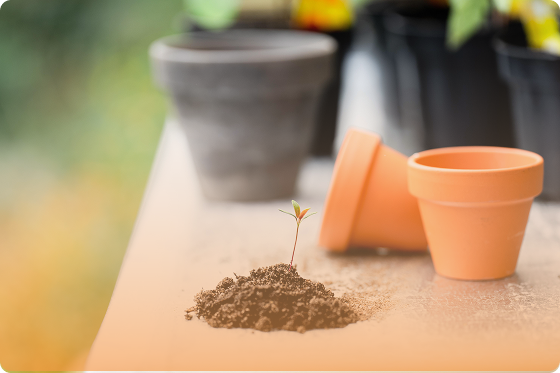
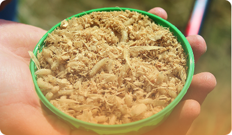

Ikut Misi

Selesaikan misi untuk poin tambahan

Ubah makanan sisa menjadi manfaat baru
Berawal dari Kecil Menjadi Semakin Besar
Limbah makanan sisa (food wise) ialah makanan layal konsumsi yang tidak habis dimakan atau terbuang. Jika dibiarkan limbah ini bisa menjadi menumpuk, mengghasilkan gas rumah kaca, membebani lingkungan, dan menyia-nyiakan sumber daya

FoodWise adalah gerakan dan platfrom yang mengajak masyarakat untuk lebih bijak mengelola makanan sisa.
Kami hadir dengan solusi sederhana dan berdampak nyata untuk mengurangi limbah makanan serta menciptakan gaya hidup lebih ramah lingkungan
Lihat Berbagai Manfaat yang Bisa Didapatkan!
Selesaikan misi untuk poin tambahan

Setiap setor sisa makanan dapat poin

Poin ditukar minyak, beras, dll
Beli produk hasil olahan!

Harga

Harga